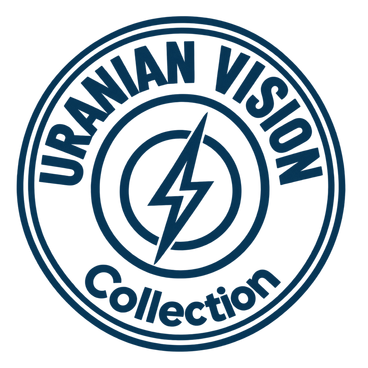

La fractura del viejo mundo
La tensión entre Saturno y Urano en la época actual
Toda era de transición histórica está gobernada por la fricción entre dos fuerzas cósmicas irreconciliables pero complementarias: Saturno, el principio de la forma, la autoridad, el límite y la preservación del orden establecido; y Urano, el pulso de la innovación, la ruptura, la descentralización y la soberanía individual. Cuando este eje entra en tensión máxima, el tejido de la realidad colectiva se agrieta, obligando a cada individuo a elegir entre la seguridad de una estructura conocida o el vértigo de una libertad sin precedentes.
En el escenario contemporáneo, esta polaridad ha dejado de ser un concepto teórico para convertirse en el conflicto central de nuestra existencia cotidiana.
¿De qué lado del eje estás viviendo hoy?
El endurecimiento de Saturno: la arquitectura del control
Cuando una estructura saturnina percibe que su ciclo de vida natural está llegando a su fin, su reacción instintiva no es adaptarse, sino rigidizarse. En el mundo actual, observamos la hipertrofia de Saturno en el hipercontrol institucional, la burocratización extrema de la vida diaria, la vigilancia digital y la imposición de narrativas únicas que pretenden homogeneizar el pensamiento humano.
Saturno ofrece un pacto antiguo pero seductor: entrega tu criterio propio y tu libertad de movimiento, y a cambio te garantizaré protección, pertenencia y previsibilidad. Para una psique dominada por el miedo a la incertidumbre, los muros de Saturno resultan reconfortantes. Sin embargo, cuando la estructura deja de estar al servicio de la vida para exigir que la vida se sacrifique en favor de la estructura, el orden se convierte en tiranía.
La irrupción de Urano: descentralización y despertar
Frente al intento de encerrar la experiencia humana en moldes cada vez más estrechos, Urano responde acelerando la frecuencia. Su acción en el mundo moderno no busca negociar reformas dentro del sistema saturnino, sino volverlo irrelevante mediante la creación de realidades paralelas y descentralizadas.
El colapso de los intermediarios. Urano disuelve la necesidad de autoridades externas que validen lo que es real, sano o verdadero. Impulsa el acceso directo al conocimiento, la autosuficiencia energética y mental, y la creación de redes humanas basadas en la afinidad vibratoria y no en la obligación geográfica o institucional.
La aceleración del discernimiento. La presión de las viejas estructuras actúa, paradójicamente, como el catalizador que despierta a quienes aún dormían. Cuanto más evidente se vuelve la artificialidad del control externo, más rápido se activa el relámpago uraniano en las mentes dispuestas a cuestionar.
La bifurcación de la realidad colectiva
La tensión entre Saturno y Urano no se resuelve mediante un consenso tibio, sino a través de una bifurcación de líneas de tiempo y niveles de conciencia. Hoy coexisten dos humanidades en un mismo espacio físico:
Por un lado, quienes se aferran desesperadamente al paradigma saturnino, delegando su salud, su economía, su atención y su criterio en sistemas externos que prometen seguridad a cambio de obediencia.
Por otro, quienes han asumido el pulso uraniano, aceptando la incertidumbre externa como el precio natural de la soberanía interior, construyendo espacios de autonomía mental, creativa y vital al margen del ruido colectivo.
Dos humanidades en un mismo espacio
| El paradigma saturnino | El pulso uraniano |
|---|---|
| DelegaSu salud, su economía, su atención y su criterio. | AsumeLa responsabilidad de su propia soberanía interior. |
| Busca seguridadAunque el precio sea la obediencia. | Acepta la incertidumbreComo el precio natural de la libertad. |
| Necesita intermediariosQue validen lo que es real, sano o verdadero. | Accede directamenteAl conocimiento, con autosuficiencia mental y energética. |
| Pertenece por obligaciónGeográfica o institucional. | Se une por afinidadEn redes humanas de afinidad vibratoria. |
El punto de equilibrio: construir la nueva forma
En su octava más elevada, Saturno y Urano no son enemigos eternos, sino aliados evolutivos. Urano trae la visión, el rayo de genio y la liberación de las cadenas obsoletas; Saturno aporta la disciplina, el rigor y la capacidad de materializar esa nueva frecuencia en la tierra para que no se disperse en el aire.
El verdadero desafío de nuestra época no consiste en destruir por destruir, ni en vivir en una rebeldía perpetua e infértil. Consiste en utilizar la lucidez uraniana para desconectarse de las estructuras caducas y, desde esa libertad conquistada, emplear la maestría saturnina para edificar una vida propia, coherente y autosuficiente que no dependa del permiso de ningún sistema para existir.
¿Qué parte de tu vida sigue esperando el permiso de un sistema para existir? ¿Y qué estás construyendo con la libertad que ya has conquistado?
Urano rompe el molde. Saturno te enseña a levantar el tuyo. Necesitas a los dos.